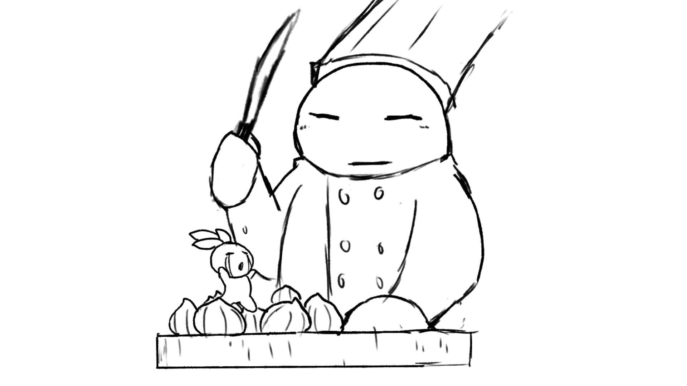
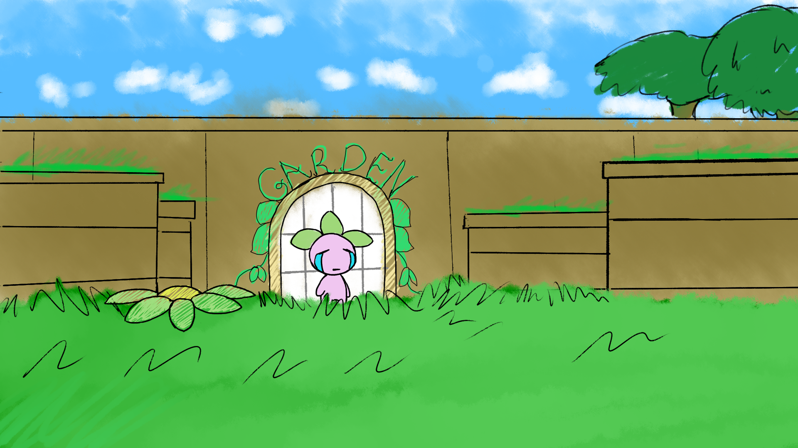
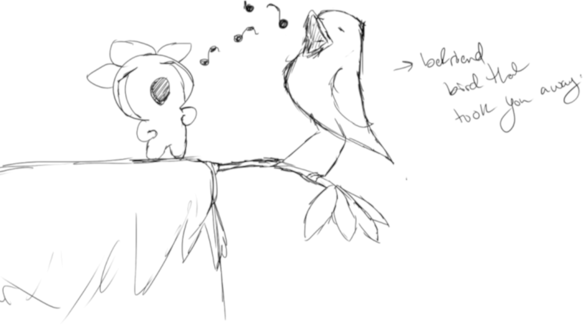
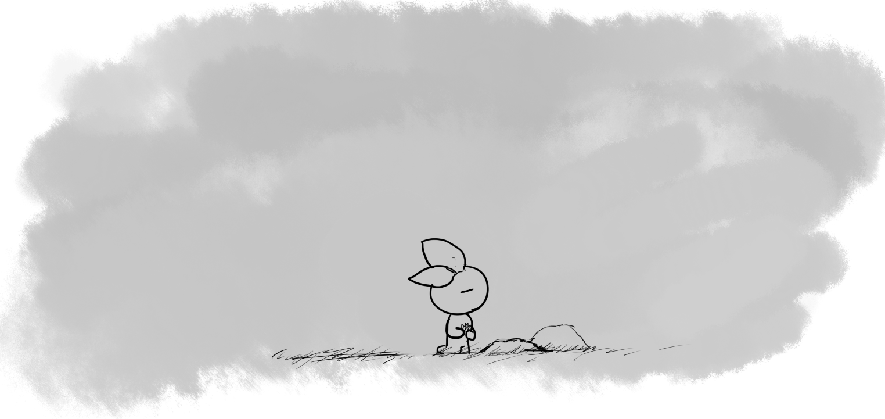

The chef had a friend, and wanted to cook the onion.

The player would have to fight the chef, our version of Bowser.

The onion escapes the chef, free to venture forth.

The onion meets a friend in the gardens!
A New Direction...
The development of the tech took a certain toll on the team.
We built physics, collisions, a level editor, game mechanics, some crude art assets,
but still no story, no "bottom."
This was my first draft of the opening cutscene. I wanted to highlight the
emotion of the character.
The closeup terrified my teammates, so they did not approve.
I thought to then widen the shot, and put the character in a dream-like scenario: Asleep, in a field. I now introduce
the glowing goal throughout the game.
We also needed to be building toward some climactic end. We never got to make an in-game boss.
So, I put in "thought text" througout the levels.

I'm a sucker for sappy endings. I took quite a bit of time developing the emotion of this scene. Here, a long shot,
to show what's missing from this little onion's life.
Originally I merely wanted to highlight the twist of visiting a dead friend.
I took a more connected approach to the game by including the glowing orb.